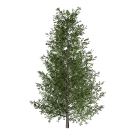

Pianta
Dove posso trovare questo comando?
laPianta
Icona:
Clic con il tasto sinistro del mouse su

La pianta è l'elemento principale di un paesaggio o giardino ed è il tipo di oggetto più importante di Lands Design.
Inserire una pianta
Dopo aver eseguito il comando laPianta, appare la finestra di dialogo relativa alla pianta. Questa finestra mostra le opzioni di base dell'oggetto pianta in quattro pannelli.
- Pianta: Specie, Calibro, "Modalità di presentazione" e "Dimensioni nel disegno".
- Formato: calibro e modalità di presentazione delle specie di piante.
- Rendering: parametri che definiscono come l'oggetto pianta viene visualizzato in una vista di rendering.
Procedimento:
- Selezionare una specie di pianta dall'elenco, nel pannello Pianta. Fare clic su
Sfoglia... per selezionare una nuova specie dal database delle piante.
- Selezionare gli altri parametri di inserimento (Calibro, "Modalità di presentazione" e "Dimensioni nel disegno"), quindi fare clic su OK per chiudere la finestra di dialogo.
- Selezionare i punti inserimento nel modello facendo clic con il tasto sinistro del mouse. Viene inserita una nuova specie di pianta ad ogni clic. È possibile modificare i parametri delle piante durante il loro inserimento sul pannello di modifica di Lands Design, nella sezione relativa alle proprietà, nel pannello Pianta.
- Premere Invio o Esc oppure fare clic con il tasto destro del mouse per terminare il comando.

Finestra di dialogo di inserimento per l'oggetto pianta.
Dove posso trovare questo comando?
Icona:
Clic con il tasto sinistro del mouse su

Inserire piante da punti
Dopo aver eseguito il comando laPianta, appare la finestra di dialogo relativa alla pianta. Questa finestra mostra le opzioni di base dell'oggetto pianta come descritto in precedenza.
Procedimento:
- Selezionare una specie di pianta dall'elenco, nel pannello Pianta. Fare clic su
Sfoglia... per selezionare una nuova specie dal database delle piante.
- Selezionare gli altri parametri di inserimento (Calibro, "Modalità di presentazione" e "Dimensioni nel disegno"), quindi fare clic su OK per chiudere la finestra di dialogo.
- Selezionare l'opzione DaPunti sulla linea di comando.
- Selezionare gli oggetti punto nella posizione in cui si desidera collocare le piante nel modello.
- Premere Invio o Esc oppure fare clic con il tasto destro del mouse per terminare il comando.
Punti di controllo 
Le piante dispongono di un solo punto di controllo, posto sul punto centrale inferiore dell'oggetto.
I punti di controllo delle piante vengono attivati automaticamente durante la selezione individuale delle piante. Per attivare uno o più punti di controllo dell'oggetto pianta, basta selezionare le piante ed eseguire il comando PuntiOn o premere il tasto F10. Per disattivare i punti di controllo, premere il tasto Esc o eseguire il comando PuntiOff.
Opzioni e parametri di inserimento
Le opzioni e i parametri relativi all'inserimento della pianta vengono divisi in vari pannelli e sono disponibili da diverse finestre di dialogo:
Generali
Attributi generali per l'oggetto pianta: Nome, Colore, Codice e Parola chiave.
Pianta
- Specie: nome delle specie di piante selezionate. Viene visualizzato un elenco di varie specie vegetali inserite nel modello corrente. È possibile selezionare una specie di pianta dall'elenco o selezionarne una nuova dal database delle piante, dopo aver fatto clic sul pulsante
Sfoglia...
- Dimensioni nel disegno:
- Diametro della chioma.
- Altezza approssimata.
- Età.
- Variazione naturale: se attiva, questa opzione imposta una variazione di altezza casuale alle specie di piante inserite o selezionate. Il valore massimo (100%) crea specie di piante che vanno dal 50% al 150% delle loro dimensioni.
- Rotazione casuale: se attiva (di default), questa opzione imposta una rotazione casuale delle piante. Diversamente, è possibile specificare un angolo di rotazione specifico per ciascuna pianta. L'angolo di rotazione viene misurato dall'asse verticale della pianta.
I valori di altezza minimi e massimi di una pianta (età della pianta) vengono definiti in base alle proprietà di ciascuna specie di piante e possono essere modificati sulla finestra di dialogo relativa alle proprietà delle specie, disponibile nel database delle piante.
Formato
- Calibro: dimensioni della corteccia delle specie di piante. Esistono alcuni intervalli di valori che vanno da 10 a 130 mm, ma è possibile inserire qualsiasi altro valore.
- Modalità di presentazione: esistono tre modalità di presentazione disponibili, ma è possibile inserirne altre.
- A radice nuda.
- Con pane di terra.
- Vaso.
Rendering
Questo pannello stabilisce il modo in cui l'oggetto pianta viene mostrato in una vista di rendering. Questo pannello è visibile solo quando la rappresentazione 3D delle piante è impostata su Realistica, nelle proprietà del documento.
- Stagione: quando è attiva l'opzione "Ignora stagione globale", l'utente può indicare in quale stagione dell'anno verrà renderizzata la pianta, scegliendo tra 7 opzioni disponibili: inizio primavera, primavera, fine primavera, estate, fine estate, autunno, inverno.
- Densità del fogliame: Flamingo nXt produrrà più o meno foglie a seconda del livello scelto.
Opzioni di modifica
Esistono opzioni di modifica per l'oggetto pianta, disponibili nell'area di modifica del pannello di modifica:
Visualizzazione grafica della pianta
Lands Design offre varie rappresentazioni simultanee in 2D e 3D di piante nel disegno, per consentire all'utente di gestire le piante da tre livelli concettuali diversi. La rappresentazione della pianta può essere cambiata nelle proprietà del documento.
Rappresentazione 2D delle piante
|
|
|
| Chioma |
Simbolo per la distribuzione quotata |
Rappresentazione 3D delle piante
|

|
|
|
|
| Realistica |
Dettagliata |
Concettuale |
Prospetti |